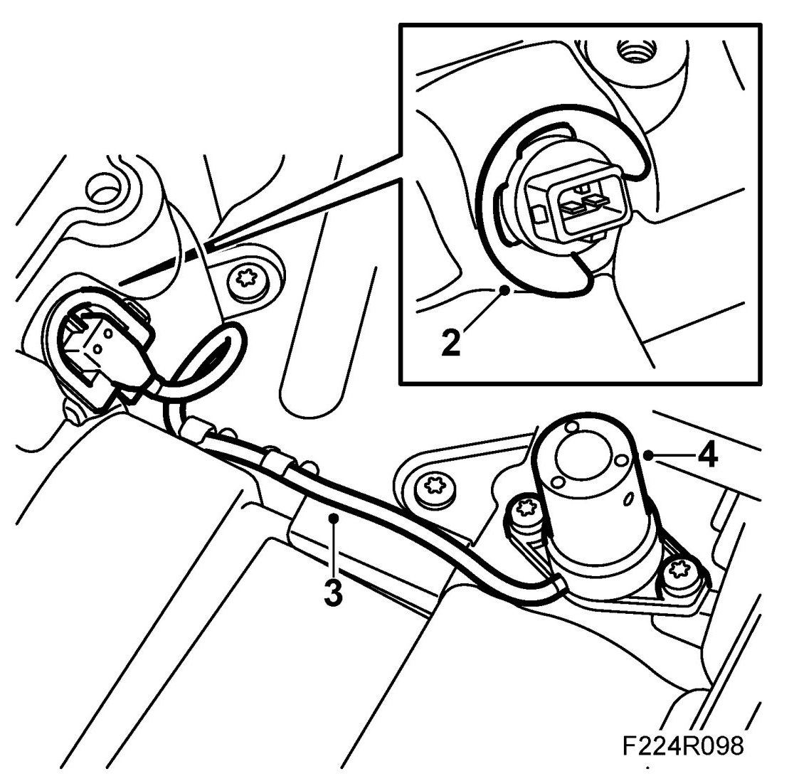
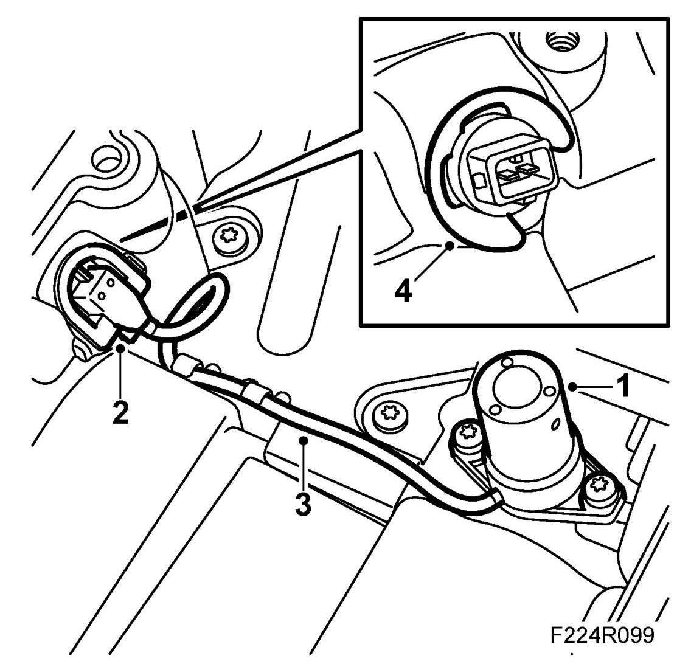

Oil Level Sensor: Service and Repair
Level Sensor, Engine Oil (243)
To remove
The level switch is used on engine variant B207R only
1. Remove the oil sump as described in Oil sump.
2. Remove the connector clip.

3. Make a note of how the cables are run and secured.
4. Remove the oil level sensor.
To fit
1. Fit the oil level sensor to the oil pan.

2. Fit the connector with a new O-ring sparingly lubricated with Vaseline.
3. Check the location of the cables and that they are secured properly, adjust as necessary.
4. Fit the retaining clip.
5. Fit the oil sump as described in To fit.